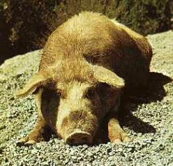
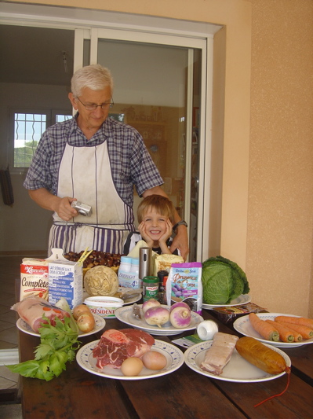
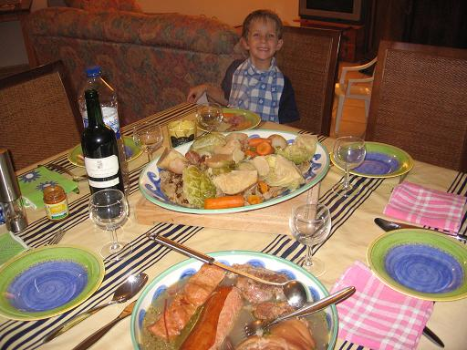
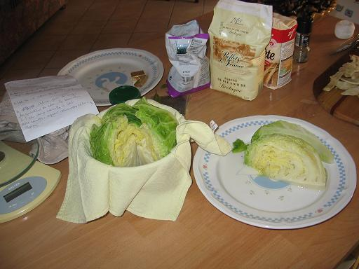

Recette
n° 100
: Kig ha
fars corse
Marie-Hélène
et Frédéric, qui avaient la gentillesse de nous
héberger à Porticcio fin octobre
2006 avaient envie d'un kig ha fars ; comme nous
étions en Corse, nous avons tenté de corsifier en partie cette recette bretonne.
Grâce à l'aide du jeune marmiton Max, très
doué en cuisine et en cochons sauvages, le résultat fut
excellent : 
 |
Ingrédients
: (pour 4
personnes) - 130g de farine de sarrasin (nous n’avons pas osé prendre de la farine de chataîgne, mais pourquoi pas ?) - 12 chataîgnes ramassées l’avant-veille près du lac de Tolla - 70g de farine de froment - 70g de sucre en poudre - 70g de beurre - 2 petits œufs entiers - 100 g de crème fraîche - 130 g de raisins secs - 130 g de pruneaux dénoyautés - 2 cubes de bouillon de bœuf ou de poule |
 Préparation :1 - Ficeler le jarret de boeuf. Peler 3 carottes, 2 navets et 2 oignons, piquer l'un de ceux-ci de 4 clous de girofle, parer la branche de céleri. Mettre ces légumes dans un grand fait-tout, ajouter sel et grains de poivre. Verser 3 litres d'eau et porter à ébullition. Introduire alors le jarret de bœuf. Laisser mijoter pendant 2 heures, puis ajouter le lard et le jarret de porc, le thym et 2 feuilles de laurier. Poursuivre la cuisson pendant 2 heures encore. 2 - Pendant la cuisson du jarret de bœuf, préparer le fars qui doit cuire pendant 1 heure 30. Mélanger les 2 farines dans une terrine et incorporer, dans l’ordre, le sucre, le beurre fondu, puis les œufs battus, la crème fraîche, le lait et les fruits secs. Lorsque la préparation est homogène, la verser sur un torchon propre, le rouler pour enfermer le fars et le ficeler solidement aux deux bouts ou en forme de bourse. Plonger le fars dans le fait-tout de cuisson des viandes et le laisser pocher à petits frémissements. Penser à le retirer au bout de 90 minutes. |
 |
3
–
Eplucher les chataîgnes et les mettres à cuire avec le
reste 4 - La cuisson du reste des légumes, plutôt destinés à la garniture, demande de 35 à 40 minute : parer et couper en quartiers le chou Le blanchir pendant 6 minutes puis le laisser refroidir ; le reconstituer dans un linge qu’on noue en bourse et l’immerger dans le bouillon où cuisent les viandes avec le reste des carottes et des navets, le céleri-rave (coupé en 4) et le saucisson pendant 30 minutes au moins. Saler et poivrer selon goût. 5
–
remettre le fars dans le bouillon 30 minutes avant de servir afin de le
réchauffer. Observations : |